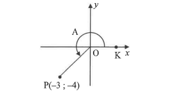
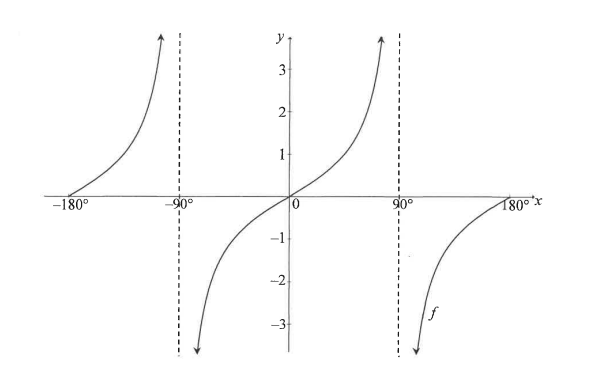

5.1 Line OP is given with P(–3 ; –4). $\hat{KOP}=A$.
5.1.1 $\cos A$ (2) 5.1.2 $\cos 2A$ (2)
5.1.3 $\sin(A-B)$, given $\sin B = \dfrac45$ and $90^\circ<B<360^\circ$ (4)
5.2 If $\cos\alpha=p$, express in terms of $p$: $\dfrac{\cos\left(\dfrac{\alpha}{2}-45^\circ\right)\sin\left(\dfrac{\alpha}{2}-45^\circ\right)}{2}$ (4)
6.1 Given: $\cos(x-y)=\cos x\cos y+\sin x\sin y$
6.1.1 Derive a formula for $\cos(x+y)$. (2)
6.1.2 Hence show: $\dfrac{\cos(90^\circ-x)\cos y+\sin(-y)\cos(180^\circ+x)}{\cos x\cos(360^\circ+y)+\sin(360^\circ-x)\sin y}=\tan(x+y)$ (6)
6.2 Given $f(x)=\sqrt{6\sin^2x-11\cos(90^\circ+x)+7}$. Solve for $x\in(0^\circ;360^\circ)$ if $f(x)=2$. (6)
6.3 Consider $g(x)=\dfrac{4-8\sin^2x}{3}$.
6.3.1 Calculate the maximum value of $g$. (3)
6.3.2 Write down the smallest $x$ for which $g$ has a maximum in $x\in(0^\circ;360^\circ]$. (1)

7.1 $f(x)=\tan x$ drawn for $x\in[-180^\circ;180^\circ]$. Write the asymptote equation for $x\in[0^\circ;180^\circ]$. (1)
7.2 Write the values of $x\in[-180^\circ;0^\circ]$ for which $f(x)\le0$. (2)
7.3 Given $g(x)=\cos2x+1$.
7.3.1 Write down the period of $g$. (1)
7.3.2 Draw $g(x)=\cos2x+1$ for $x\in[-180^\circ;180^\circ]$, showing intercepts and turning points. (3)
7.4 Use the graphs to determine the general solution of $2\cos^3x-\sin x=0$. (4)